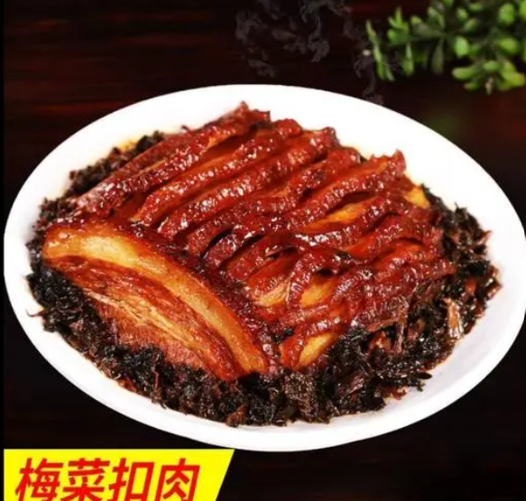
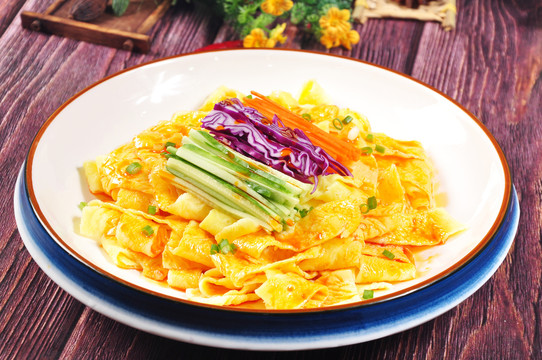
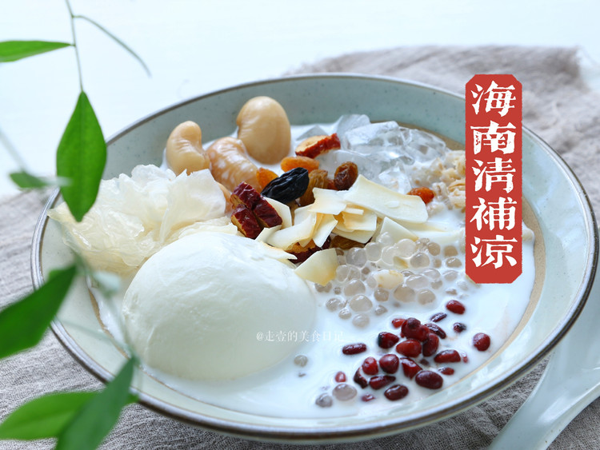

Some of my favourite foods!
梅菜扣肉 (Braised pork with preserved vegetable)
梅菜扣肉(粤菜), known as "Braised Pork with Preserved Vegetable," is a delectable Chinese dish that boasts a rich history and deep cultural significance. Originating from the Cantonese cuisine of Southern China, this dish has become a cherished delicacy across the country and beyond. With roots dating back to the Qing Dynasty, 梅菜扣肉 has stood the test of time, evolving into a culinary masterpiece. The dish features succulent slices of pork belly, skillfully braised to achieve tender perfection. The preserved mustard greens (梅菜) infuse the pork with a distinctive savory-sweet flavor, while also adding a delightful contrast in texture. Culturally, 梅菜扣肉 embodies the essence of traditional Chinese cooking techniques and culinary philosophies. Its preparation often involves a harmonious blend of ingredients, embodying the yin-yang balance that is integral to Chinese gastronomy. Beyond its culinary appeal, this dish is a testament to the art of preserving ingredients, a practice deeply ingrained in Chinese culinary traditions.
五彩面皮(Rainbow noodle)
五彩面皮(西北菜) or "Rainbow Noodle" is a vibrant traditional Chinese dish that captivates with its colorful appearance. Crafted from dough made using various natural ingredients like spinach, carrots, purple sweet potatoes, each color signifies a distinct flavor and nutrition. The dish's origins trace back to ancient Chinese culture, symbolizing abundance and diversity. Throughout history, "五彩面皮" has graced traditional celebrations and festivals, enhancing the festive spirit and serving as a culinary centerpiece. It not only delights the palate but also plays a significant role in social gatherings and family reunions. Moreover, it serves as a means of passing down family cooking techniques and cultural heritage, forging a connection between generations. In today's society, "五彩面皮" stands as an emblem of traditional Chinese gastronomy, revered both domestically and internationally. It offers a sensory experience while embodying cultural heritage and the essence of communal gatherings. It encapsulates the rich tapestry of Chinese culinary culture and heritage.
清补凉(Qing Bu Liang)
"清补凉(粤菜)" (Qing Bu Liang) is a traditional Chinese dessert or cold sweet soup that is popular during the hot summer months. It is known for its refreshing and cooling properties, making it a popular choice for relieving heat and thirst. The name "清补凉" can be translated as "Clear Nourishing Cold" in English, reflecting its dual nature of being both cooling and nutritious. This dessert is typically made from a variety of ingredients such as dried fruits, beans, nuts, seeds, and sometimes herbs. These ingredients are often combined with a sweet syrup or sugar water, creating a delightful blend of textures and flavors. While the specific ingredients can vary, common components of "清补凉" might include red dates, lotus seeds, mung beans, black-eyed peas, barley, and other nuts and seeds. The dessert is often served chilled and is a popular choice to combat the sweltering heat of summer in China. It's not only a tasty treat but is also believed to have healthful properties according to traditional Chinese medicine principles. "清补凉" is not only enjoyed as a dessert at home but is also available in restaurants and dessert shops across China. It showcases the balance of flavors and textures that Chinese cuisine is known for and offers a delightful way to beat the summer heat.